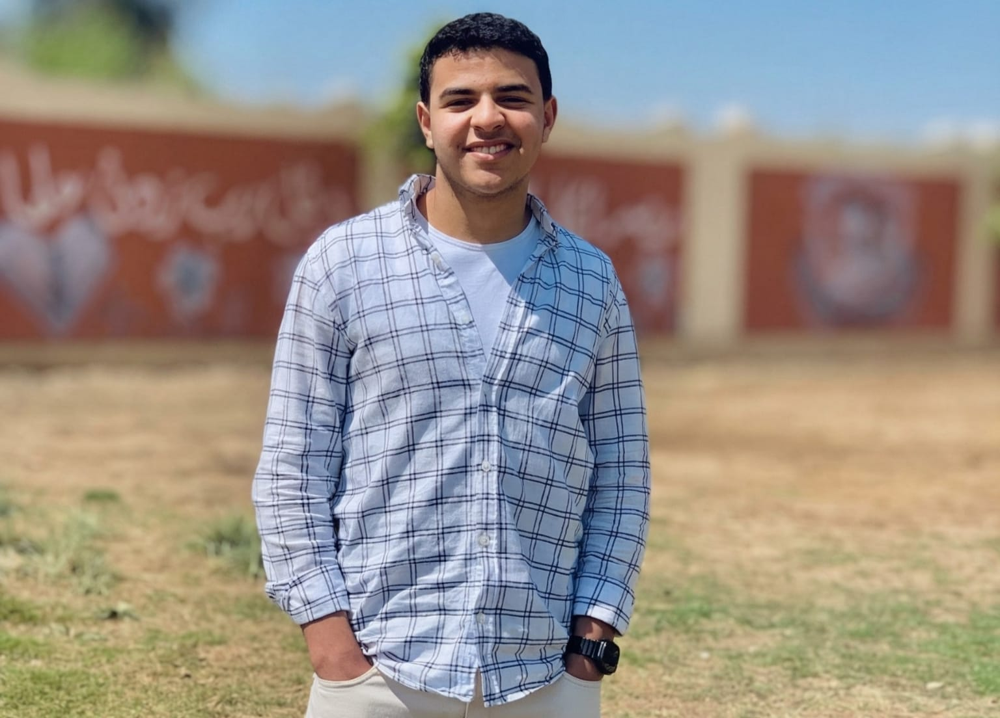

مونتاج فيديو • 01
من أعمال المونتاج
نموذج من الفيديوهات التي عملت على مونتاجها.
مونتير فيديو ومصمم | مهتم بالبرمجة
أنا فارس علي، أعمل على مونتاج فيديوهات يوتيوب والريلز وتصميم الصور المصغرة، وأطوّر مهاراتي في البرمجة باستمرار.

نبذة عني
أعمل بشكل حر مع صاحب قناة يوتيوب، وأتولى مونتاج الفيديوهات ومقاطع الريلز وتصميم الصور المصغرة وغلاف القناة. ساهم عملي في نمو ملحوظ في مشاهدات القناة ومشتركيها.
لدي معرفة بأساسيات HTML وCSS وJavaScript، ومستوى متقدم في اللغة الإنجليزية. أحب التعلّم بالتطبيق، وأبحث دائمًا عن فرص لتطوير مهاراتي الإبداعية والتقنية.
فيديوهات يوتيوب ومقاطع قصيرة من البداية للنهاية.
صور مصغرة وأغلفة قنوات بهوية بصرية واضحة.
تعلّم أساسيات الويب وتطبيقها في مشاريع عملية.
نماذج من أعمالي
نماذج من تصاميم الصور المصغرة والمحتوى المرئي.
نموذج من الفيديوهات التي عملت على مونتاجها.
مقطع يبرز اهتمامي بالإيقاع والتفاصيل البصرية.
مشروع برمجي تفاعلي
أداة ويب صغيرة تساعد على متابعة مراحل تجهيز الفيديو. صُممت لتجمع بين مجال عملي واهتمامي بتطوير الويب.
الخبرات العملية
قناة يوتيوب
صيدلية
مهاراتي
CapCut — متمرس
صور مصغرة وأغلفة قنوات
HTML وCSS وJavaScript
العربية: اللغة الأم • الإنجليزية: متقدم
التعليم والشهادات
طالب بالمرحلة الثانوية.
في البرمجة والذكاء الاصطناعي من جامعة هيروشيما (اليابان)، بعد اجتياز امتحاني الفصلين الدراسيين الأول والثاني.
مع هشام مصطفى.
لديك مشروع أو فرصة؟
للتعاون في المونتاج أو التصميم، تواصل معي مباشرة.